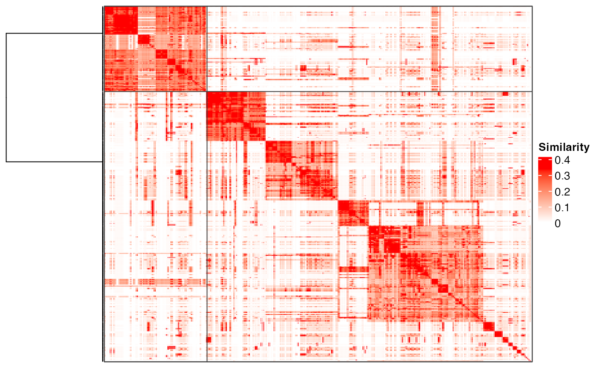
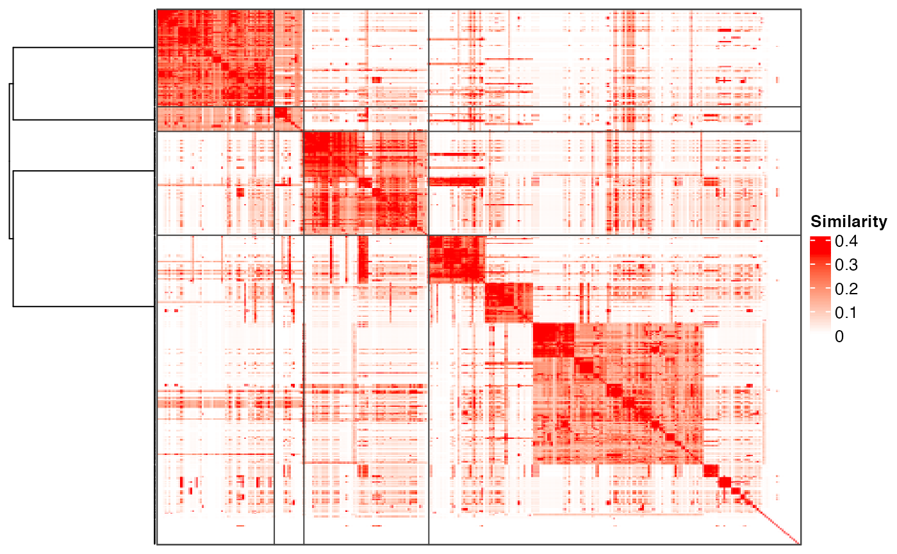
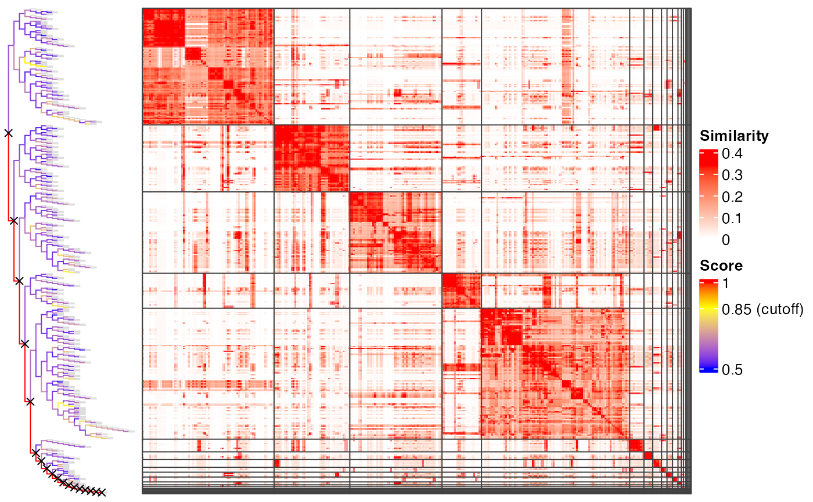

plot_binary_cut.RdVisualize the process of binary cut
plot_binary_cut(mat, value_fun = median, cutoff = 0.85, partition_fun = partition_by_pam, dend = NULL, dend_width = unit(3, "cm"), depth = NULL, show_heatmap_legend = TRUE, ...)
| mat | The similarity matrix. |
|---|---|
| value_fun | Value function to calculate the score for each node in the dendrogram. |
| cutoff | The cutoff for splitting the dendrogram. |
| partition_fun | A function to split each node into two groups. Pre-defined functions in this package are |
| dend | A dendrogram object, used internally. |
| depth | Depth of the recursive binary cut process. |
| dend_width | Width of the dendrogram. |
| show_heatmap_legend | Whether to show the heatmap legend. |
| ... | Other arguments. |
After the functions which performs clustering are executed, such as simplifyGO or
binary_cut, the dendrogram is temporarily saved and plot_binary_cut directly
uses this dendrogram. So, if the partition function brings randomness, it makes sure
the clustering is the same as the one made by e.g. simplifyGO.
# \donttest{ mat = readRDS(system.file("extdata", "random_GO_BP_sim_mat.rds", package = "simplifyEnrichment")) plot_binary_cut(mat, depth = 1)#> use the cached dendrogram.plot_binary_cut(mat, depth = 2)#> use the cached dendrogram.plot_binary_cut(mat)#> use the cached dendrogram.# }